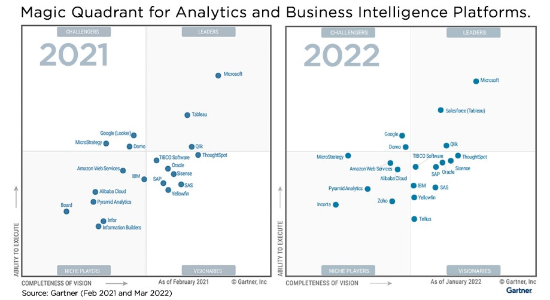

Este projeto visa aplicar os conceitos de data visualization utilizando uma ferramenta de BI (Bussiness Intelligence).
O projeto parte dos insumos do projeto 1, que foi o processo de ETL de dados sobre carteira de crédito do portal IF.data.
Para este projeto teremos que:
A ferramenta de BI escolhida para este projeto é o Power BI. A ferramenta da Microsoft apresenta os principais recursos utilizados em visualização de dados,
como a exploração de dados e a construção de painéis interativos, além de possibilitar técnicas de análise aumentada (IA). Segundo o Gartner, o Power BI é enquadrado
como ferramenta lider de mercado, tanto pelos seus recursos e interatividades com os demais produtos da propria Microsoft, como também pelo seu preço em comparação aos demais.
